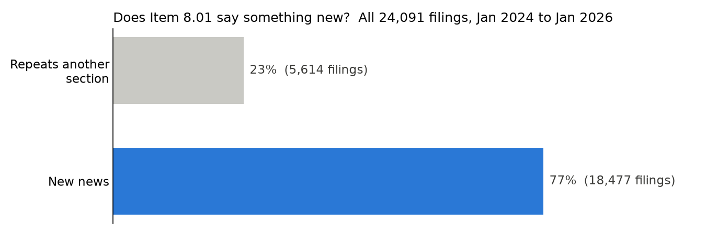
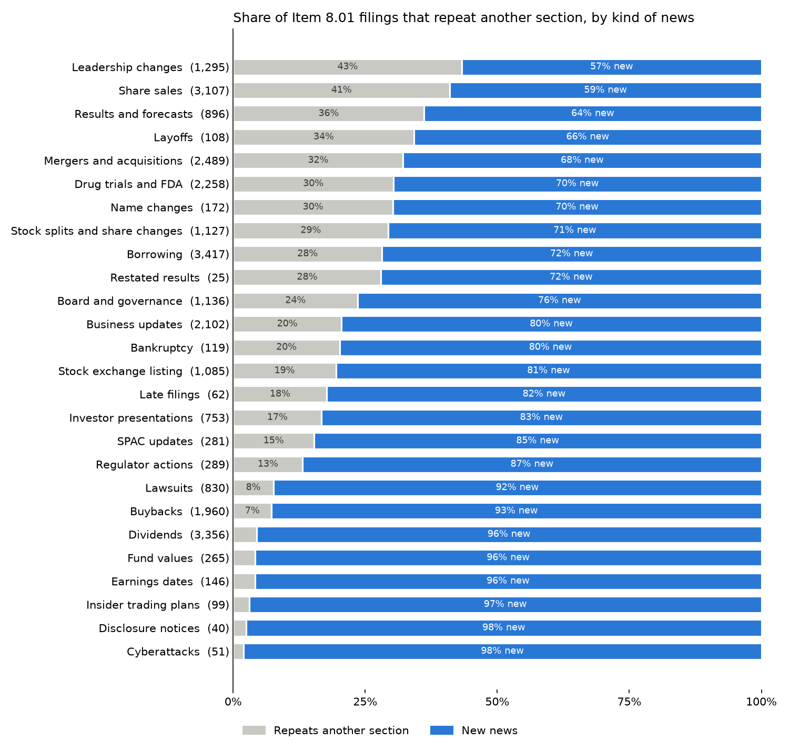
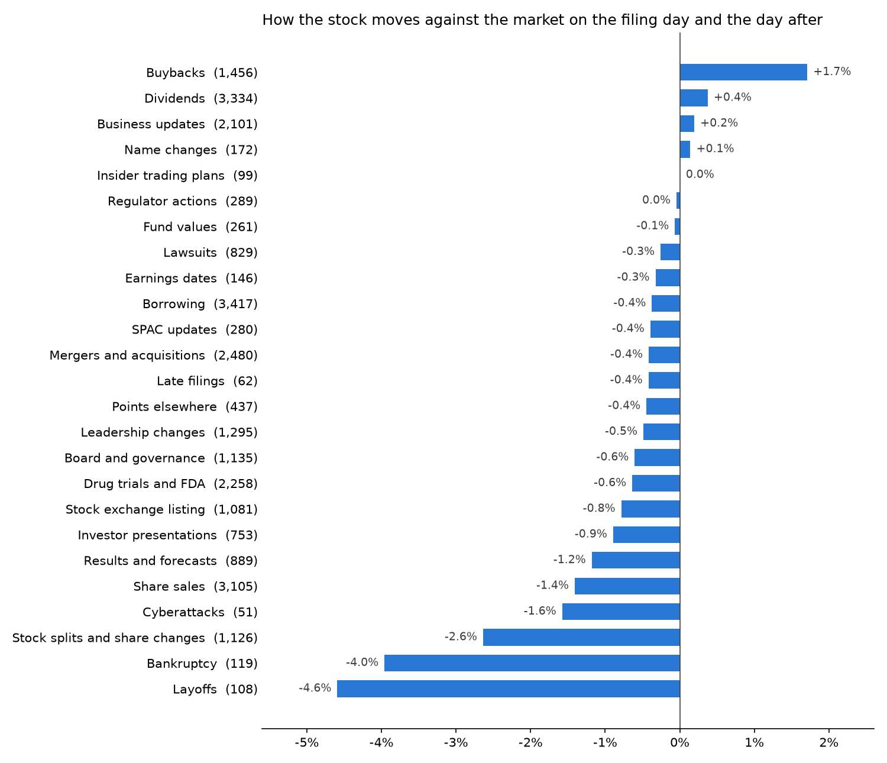
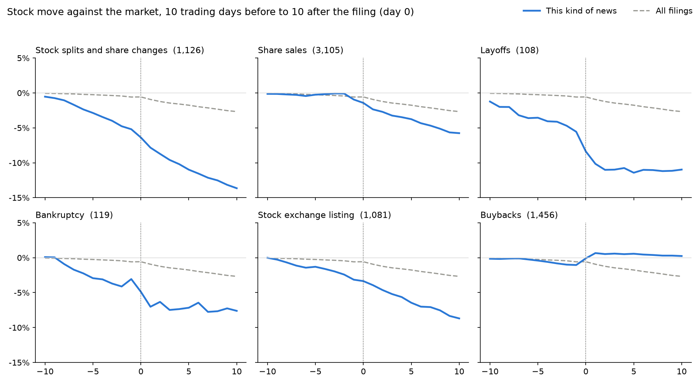

Personal research · in progress
8-K Filings
When something important happens at a US public company, it files a form called an 8-K. The form is split into numbered sections, called Items, and most have a fixed topic, like a new CEO (Item 5.02) or a signed deal (Item 1.01). I'm studying what these filings really say, and how stocks move around them.
Item 8.01: Other Events
Item 8.01 is the catch all: anything the company wants investors to know that doesn't fit anywhere else. I used Claude to read 24,091 of these sections and asked a simple question: is this news, or a repeat?
Most of it is new news
It's easy to assume Item 8.01 just repeats the rest of the filing. It doesn't. In 77% of filings, Item 8.01 reports something that no other section of the same 8-K mentions. Only 23% repeat another section.


If you read only the main sections of an 8-K, you miss most of what Item 8.01 says. Analysts, investors and anyone building tools on SEC filings should read it too.
The main kinds of news
I sorted every Item 8.01 into 27 kinds of news. These eleven cover most of it. A filing can report more than one kind, so the shares add up to more than 100%.
| Kind of news | Share of filings | What it usually is |
|---|---|---|
| Borrowing | 14% | New loans, bonds and credit lines, or paying old debt back early. |
| Dividends | 14% | Declaring the regular dividend. A few raise it, pay a special one, or cut it. |
| Share sales | 13% | Selling new stock to raise money, through a public offering or a private deal. |
| Mergers and acquisitions | 10% | Buying a company, selling part of the business, being bought, or a deal falling through. |
| Drug trials and FDA | 9% | Clinical trial results and FDA steps, mostly from biotech companies. |
| Business updates | 9% | New contracts and partnerships, product launches, and in 2025, companies buying crypto. |
| Buybacks | 8% | The company buying back its own shares, or starting a new buyback program. |
| Leadership changes | 5% | Executives and board members joining or leaving. |
| Board and governance | 5% | Shareholder meeting dates, vote results, meetings postponed, and rule changes. |
| Stock splits and share changes | 5% | Changes to shares that raise no money, most often reverse splits. |
| Stock exchange listing | 5% | Warnings that a stock could be delisted, and companies fixing the problem. |
What repeats and what doesn't
- Some news shows up only here. Dividends (96% new), buybacks (93%) and lawsuits (92%) almost never appear in another section. For these, Item 8.01 is the only place to find them.
- The repeats have a pattern. Leadership changes (43%) and share sales (41%) repeat the most. Usually the same press release is filed twice, or the signed agreement behind a share sale also goes in its own section.
- Drug companies repeat the most. A third of life sciences filings are repeats, mostly because biotechs often file the same trial results press release in two places.


How I did it
I collected every Item 8.01 from SEC EDGAR, had Claude label the kind of news in each one, then had Claude compare it with the other sections of the same filing.
Stock moves around the filing
How does a company's stock move in the 10 trading days before and after it files an Item 8.01? I measured each stock's daily move minus the S&P 500's, so a market wide rally or drop doesn't count.
The first reaction
- Buybacks lift the stock most: +1.7% on the filing day and the day after. (This leaves out News Corp, which files a buyback notice almost every trading day.)
- Layoffs and bankruptcy hit hardest: −4.6% and −4.0%.
- Most news barely moves the stock. Borrowing, mergers, lawsuits and leadership changes all move it by half a percent or less.


Which kinds of news to focus on
Five kinds of news stand out, because the move is large, it shows up across hundreds of companies, and it keeps going after the filing:
- Stock splits and share changes. Most are reverse splits, which companies do when their share price gets too low. These stocks slide before the filing and keep sliding after it: about 14% below the market over the 21 days.
- Share sales. Selling new stock spreads the company over more shares. The price drops on the news and keeps falling, about 6% below the market by day 10.
- Stock exchange listing. Most of these say the company has fixed a listing problem, such as a share price below $1, and the rest are warnings. Either way, the stock slides steadily, about 9% below the market over the 21 days.
- Layoffs and bankruptcy. These have the biggest drops on the day, but the stock is already falling for days before. The trouble is often visible before it's filed.
- Buybacks. The one clear positive. The stock dips slightly before the announcement, jumps when it's filed, and holds the gain.


What's next
- Good news versus bad news. Splitting each kind of news by tone, since a failed drug trial and a successful one move the stock in opposite directions.
- All the older filings. A classifier trained on Claude's labels, to cover about 300,000 older filings.
- Insider trades. Whether company insiders buy or sell around this news.
Built with
- Python
- pandas
- Claude Sonnet
- Anthropic Batches API
- SEC EDGAR
- matplotlib